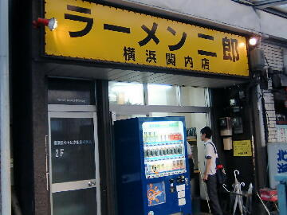
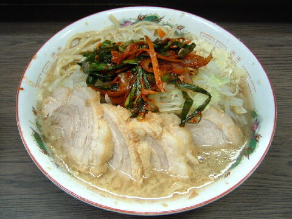
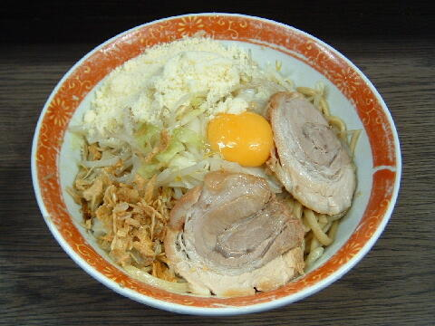
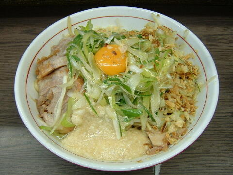

横浜市 中区 長者町 6-94
水
11：00〜14：30 18：00〜22：00

小ラーメン 740円、小ぶた 840円、小ぶたダブル 940円
大ラーメン 790円、大ぶた 890円、大ぶたダブル 990円
汁なし ＋80円
味つけ玉子 80円、ニラキムチ 80円、粉チーズ 100円、ネギ 100円、生たまご 50円（現金，店内非表示）
店員は、店主（二郎鶴見出身）と助手。店主が不在の時もある。
白コショウ（ギャバン）、唐辛子、酢。
レンゲ有。ティッシュ無。名刺無。
BGMは、FM横浜。
トッピングは、一般的二郎と同じだが、裏トッピングとして紅生姜（ベニ）があるとかないとか。
たまにゲリラトッピングもある。Ｔｗｉｔｔｅｒにて告知。
メルマガは「a0001676898@mobile.mag2.com」で用意されている
ラーメン二郎 横浜関内店 横浜関内店のTwitter
「ラーメン二郎 関内」でヤフー検索
「ラーメン二郎 関内」でヤフーリアルタイム検索
「ラーメン二郎 関内」でグーグル検索

小ぶた ニンニク ニラキムチ
麺は、ツルツル、シナシナした食感の平太ストレート麺が美味しいじゃん！
ぶたは、「＠状」のぶた。トロントロンに柔らかくて脂身もやっぱし美味い。厚さにはぶれがある。
スープは、微乳スタイルの甘辛が い〜ねっ！
ヤサイは、モヤシ7：キャベツ3の割合。ゆで方は柔らかい。
ニンニクは、中粒に刻んだニンニク。
キムチは、程好い辛みのニラキムチ。キムチ特有の酸味は無い。
また、汁なしの食券を添えてお願いすれば卵の黄身、フライドオニオンを添えてくれる。

小ラーメン＋汁なし ニンニク 粉チーズ
トッピングはラーメンと同じ。
醤油と二郎の旨味が詰まったタレに、卵の黄身、フライドオニオンが加わる。
デフォで黒胡椒が混ぜられる。
粉チーズは黄身と混ぜるとカルボナーラのようになってジャンク度が増す。
スープ割りもできる。おすすめ！

小ラーメン＋汁なし サザエでございま〜す
この日の特別トッピングは開店８周年記念のネギトロ（胡麻油を絡めた葱と味付きトロロ）。
ネギトロのトッピングコールは「サザエでございま〜す」
汁なしと良く合うとのことであったが、その通りで今まで食べたなかで一番美味いトッピングであった。
ＰＣ店